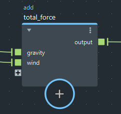

“Bifrost 曲线图编辑器”(Bifrost Graph Editor)的菜单栏中包含用于编辑和查看图表的各种命令和选项。
在单独的选项卡上创建新图表。
将背景添加到图表。如果选择了节点，则背景会围绕它们。否则，将在图表的中心创建背景。请参见使用便笺和背景注释和组织节点。
添加可用于描述图表各部分的彩色文本框。请参见使用便笺和背景注释和组织节点。
在每个选定连接上添加观察点。请参见诊断和调试图表。
发布选定的复合。请参见发布复合。
发布整个图表，使其可以显示在“Bifrost 浏览器”(Bifrost Browser)中。仅在编辑器中查看图表顶层级时显示此命令。请参见以图表形式发布效果。
将第一个选定节点的第一个输出连接到第二个选定节点的第一个未连接输入。如果选定的节点多于两个，则第二个选定节点的第一个输出将连接到第三个选定节点的第一个未连接输入，依此类推。现有连接永远不会被替换。
将引用复合的定义导入到图表中，以便可以在内部修改复合。
展开选定的复合，以在图表的当前层级显示其内部子图。
将复合添加到图表。如果选择了节点，则这些节点将包含在复合中，且其与未选定节点的连接将成为复合上的端口。请参见创建和编辑复合。
在图表输出的两种类型之间转化：默认的 bifrostGraphShape 和旧的 bifShape。请参见在 bifrostGraphShape 和 bifShape 输出之间转化。
在 Maya 场景中选择当前图表。
暂停图表的执行。当编辑需要较长时间来编译和执行的大型图表时，这将非常有用。请参见暂停图表编译和执行。
清除已缓存到内存的反馈端口的当前状态。这将重置已计算到当前帧的模拟。
在编辑窗格中显示选定复合的内部子图。
在下一个更高层级显示图表。
隐藏选定节点的各个输入和输出端口。如果未选择任何节点，这将改为影响所有节点。
隐藏选定节点的未连接端口。如果未选择任何节点，这将改为影响所有节点。
显示选定节点上的所有端口。如果未选择任何节点，这将改为影响所有节点。
显示选定节点上方的节点名称，而不是参数值。
值以斜体显示，以区别于名称。
在图表中的节点名称上方显示节点类型。

基于选定节点的连接重新排列这些节点。如果未选择任何节点，这将改为影响所有节点。
在编辑窗格中显示栅格。
在编辑窗格中移动节点时将这些节点捕捉到栅格。
选择绘制连接线的样式。
如果在添加新节点时选择了某个节点，则选定节点的输出将连接到新节点的输入。
在将节点添加到现有连接上时移动上游节点。当您选择连接，然后按 Tab 键创建新节点时，以及按住 Alt 键并将现有节点拖动到连接上时，适用此功能。此外，在炸开复合（为新的可见节点留出空间）时也适用此功能，并且此功能会考虑背景和邻近便签。
粘贴节点时，这些节点会自动连接到与原始节点相同的输入。
将节点拖动到连接上时，此节点会插入到连接的节点之间。
选定节点上的连接将亮显。
允许在按 Esc 键后继续播放当前图表。要继续，请后退一帧，然后向前播放场景。这在调整模拟时非常方便，或者您可以将其关闭以节省大量模拟的内存。请参见终止模拟。
切换“参数编辑器”(Parameter Editor)的显示。
显示“信息”(Info)面板，此面板会显示所选节点的描述。
在 Web 浏览器中打开“Bifrost 帮助”(Bifrost Help)。
在 Area 上搜索 Bifrost 教程。
打开“Bifrost 浏览器”(Bifrost Browser)。
在 Web 浏览器中打开“Bifrost 社区中心”(Bifrost Community Hub)。
显示有关正在运行的 Bifrost 版本的信息。